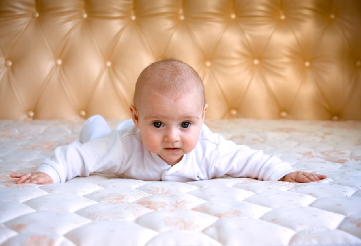
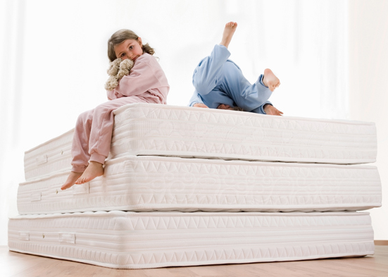

Матрасы в Йошкар-Оле Вы сможете подобрать по своим предпочтениям и возможностям в магазине Текстиль на Сернурском тракте, 13А.
Огромный ассортимент, цены от производителя !!!!!
В ассортименте представлены хлопковые, поролоновые, классические пружинные и ортопедические матрасы, разные по составу и размеру. Здесь Вы можете подобрать матрасы для взрослых и детей разной степени жесткости. Ассортимент магазина широкий, например, детские матрасы представлены в разном исполнении: хлопковое волокно, поролоновые разной толщины, классические пружинные и ортопедические. Прежде чем ехать выбирать матрас обязательно замерьте спальное место, матрас не должен быть меньше или больше кровати или кроватки.

Как же выбрать матрас для ребенка? Одна из причин возникновения сколиоза- неправильное положение спины во время сна. Как Вы уже знаете на сегодняшний день разнообразие матрасов велико и для каждого возраста ребенка рекомендуют разные матрасы.
Так для новорожденных чаще всего ортопеды рекомендуют матрасы средней или высокой жесткости. Слишком жесткий матрас приобретать не желательно, потому что ребенку будет жестко и не удобно, а как следствие он будет часто просыпаться во время сна. Самый популярный матрас для детей до трех лет- матрас из кокосовой койры. Во первых у него оптимальная жесткость, во вторых это натуральный материал, не подвергается гниению, долговечен.

Для детей старше трех лет специалисты рекомендуют матрасы средней жесткости. Это могут быть матрасы как беспружинные — из пенополиуретана, так и пружинные, среди которых лучше выбрать матрас с независимым пружинным блоком. Пружины в таком матрасе подстраиваются под форму тела и поддерживают ее в правильном положении.
Не забудьте приобрести для матраса влагостойкий наматрасник , он защитит матрас от влаги и продлит его срок службы.
Внимание!!!! Прыгать и ходить по пружинным матрасам категорически запрещается!
В продаже магазина так же имеются одеяла, подушки, постельное белье, полотенца, наматрасники, товары для бани и сауны, женский трикотаж и многое другое.